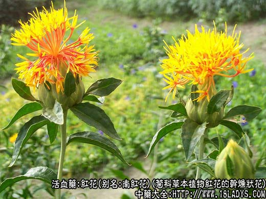
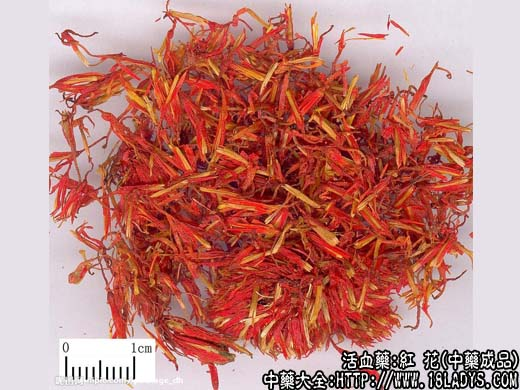
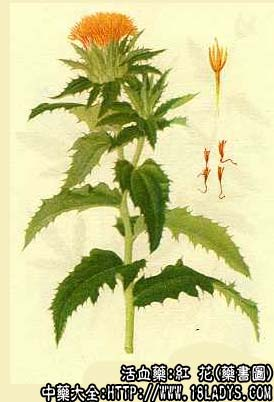

红花为常用中药。汉书名“红蓝花”，《开宝本草》释名红花。
别名：南红花、草红花、红蓝花、红花毛。
来源：为菊科一年生或二年生草本植物红花的干燥状花。多为栽培。
植物形态：茎圆柱形，具细浅槽纹，高至30～90厘米，基部木质化，上部多分枝。叶互生，近无柄并稍抱茎，卵形或卵状披针形，稍厚，先端尖锐，边缘有锯齿或带有锐刺。头状花序顶生，总苞卵形或半球形，苞片多列轮生，外面2至3列呈叶状，边缘有刺，内列无剌膜质。花管状，上端红黄色，基部渐细呈黄色，集生于花托上，雄蕊5枚，雌蕊1枚，柱头2裂、亦黄色。瘦果卵形，白色，有突起的肋线4条，无冠毛。
产地：主产于河南，现全国各地多有栽培，新疆地区大量种植。
性状鉴别：花皱缩弯曲散乱成团或散在，红黄色，纤细如毛，故产地习称红花毛。单一的花朵长2厘米左右，基部线形黄色或橙色，上端花冠呈管状，长约0.8厘米，直径约1.5毫米先端5裂，红色或橙色，雄蕊及柱头黄色，略有香气，味微甘苦。以花冠长，色红鲜艳者为佳。
主要成分：含红花甙，又名红色素；另含红花黄色素。
功效与作用：破瘀活血通经，据初步动物实验，其作用为：
1、兴奋子宫：其煎剂和流浸膏能使子宫发生紧张性或节律性收缩，对已孕子宫更明显，作用较迅速而持久。
2、降压：有降血压作用，并能维持较长时间。
3、扩张血管：红花水浸液有一定的扩张心冠状动脉的作用。
炮制：生用。
性味：辛、温。
归经：入心、肝红。
功能：破瘀、活血、通经。
主治：经血不调，产后腹痛，徵瘕，外伤瘀血仲痛，痈疽肿痛等症。
临床应用：1、治血瘀经痛、经闭，取其对子宫有兴奋作用而活血通经。适应证、用法与桃仁相同。产后恶露未尽、瘀血积滞、小腹胀痛，也可用红花，常配当归、牛膝、肉桂等，方如折冲汤。
2、治冠心病心纹痛。前人已认识到红花配川芎、当归能治“胸腹血气滞痛”。现代实践用红花15g，配川芎15g,水煎，每日一剂（或用片剂），作为治气滞血瘀型的冠心病心纹痛的基本方，再随证配伍，确有一定疗效，可能与川芎、红花扩张心冠状动脉的作用有关。据报道，治疗心纹痛的近期有效率较高，但显效率仍不满意。也可再加银杏叶，制成银川红舒血片，对冠心病心纹痛的疗效也较好。
3、治跌打损伤，效力比桃仁强。对挫伤、捩伤的皮下积瘀、青紫肿痛，可用红花油或红花酒（用酒精浸成红花酊或用米酒煎煮）外擦；对内伤瘀血，可配苏木、当归、赤芍等，有助于消仲止痛，方如跌打活血汤。
4、用于调养气血，用量宜小，可在温补剂内加小量红花。例如产后血晕、头晕、眼花、气冷，甚至出现口噤（牙关紧闭、不易张开），此时宜用八珍汤或炙甘草汤，酌加红花0.9～1.5g，效果更好。
5、红花用于眼科，主要为清热消炎，配生地、赤芍、连翘等治目赤红肿（包括急性结膜炎、麦粒肿等），方如红花散。
使用注意：1、孕妇忌用，因能剌激子宫收缩；月经过多、有出血倾向者不宜用；2、红花大量则活血破瘀，小量则养血和血；3、红花与桃仁均能祛瘀，但桃仁在血证中应用比红花更广泛。对于热证血瘀，桃仁较常用；对于心腹瘀痛，红花效果较佳。
用量：一般用3～9g，稍大量用12～15g，和血养血用0.9～15g。
处方举例：1、折冲汤：红花9g，桃仁9g（打），赤芍9g，归尾9g，肉桂4.5g（冲），川芎4.5g，丹皮6g，延胡6g，酒、水各半煎服。
2、冠心片（北京地区防治冠心病协作组）：（每12片含川芎、红花生药各15g），每日三次，每次4片，开水送服。
3、跌打活血汤：红花6g，桃仁6g（打），苏木6g，归尾9g，赤芍9g，枳壳6g，木香1.5g，乳香9.5g，没药4.5g，水煎服。
4、红花散：红花4.5g，连翘6g，当归4g，生地9g，紫草6g，赤芍9g，大黄4.5g，甘草3g，水煎服。
附：藏红花（处方名：西红花、藏红花、番红花）为鸢尾科植物番红花的干燥柱头及花柱上部。原产欧洲及中亚、南亚。味甘，性寒，微带潮润。含三种色素成分即a—、b—及r—红花素。作用较川红花强，尤以清热解毒效力较好。主要用于治疗麻疹；当疹透不快，热盛血郁，斑疹颜色暗晦，不够鲜明，或疹出过于浓密，全身反应较强烈，或合并肺炎，久热不退，均宜用西红花，方如麻疹早期用的紫草红花饮（见紫草项下）。又治肚脓疡时，可用西红花配清热解毒、托里排脓药如山慈姑、王不留行、炙山甲、黄芪、黄柏、甘草等。用量比川红花轻，常用1～3g，泡服。
注：红花叶缘和苞片有带剌或不带剌两种。